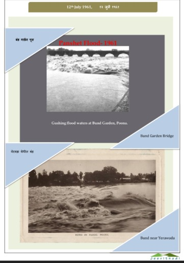

The above images show the major floods of1961 that occurred due to overflow of the river Muthai. IT caused a widespread devastation and damage to habitat and life along its surrounding area.
The above illustration shows the timeline of the floods of 1961.